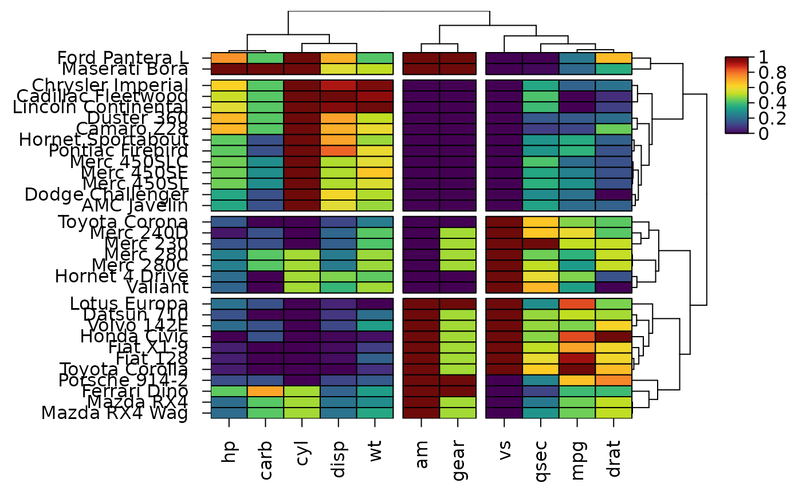

heat_map_info() returns the data and layout used to construct a
heatmap, including the order of rows and columns, cluster assignments and
dendrograms, so that they can be used in downstream analyses.
Arguments
- x
object of class
heat_mapreturned byheat_map.
Value
a list containing:
data: the data displayed in the heatmap (after scaling).row_order: indices of the rows ofxin the order they are displayed from the top to the bottom of the heatmap.col_order: indices of the columns ofxin the order they are displayed from left to right.row_clusters,col_clusters: the cluster assigned to each row/column in their original order (orNULLwhen no clusters were defined). Clusters are numbered in the order they are displayed: from left to right for columns and from bottom to top for rows.tree_x,tree_y:hclustobjects for the x and y axis dendrograms (orNULL). Branch heights are rescaled for display.support_x,support_y: bootstrap support of each merge oftree_xandtree_y(tree_support_x,tree_support_y),NAfor the root and merges fixed by groups, orNULL.zoom_x,zoom_y: indices of the columns (from left to right) and rows (from top to bottom) enlarged in a zoom panel (zoom_x,zoom_y), orNULL.axis_text_x,axis_text_y: axis labels from left to right and from top to bottom respectively.colours,sizes: the fill colour and relative size of each cell, in the orientation of the original data.split_colours,split_data: the fill colour and value (after scaling) of the lower right half of each cell (cell_split) in the orientation of the original data, orNULL.annotations: listsxandywith the colour of each row/column for every annotation, in the original order.layout: a data.frame with the bounding box (xmin,xmax,ymin,ymax) of each component of the heatmap in inches from the bottom left corner of the device.raster: whether the cells were drawn as raster images (seecell_rasterinheat_map()).col_limits,size_limits: limits of the colour and size scales.
Examples
hm <- heat_map(
mtcars,
scale = "column",
tree_cut_x = 3,
tree_cut_y = 4,
popup = FALSE
)
#> Applying range scaling to each column...

info <- heat_map_info(hm)
info$col_clusters
#> mpg cyl disp hp drat wt qsec vs am gear carb
#> 3 1 1 1 3 1 3 3 2 2 1
rownames(mtcars)[info$row_order]
#> [1] "Mazda RX4 Wag" "Mazda RX4" "Ferrari Dino"
#> [4] "Porsche 914-2" "Toyota Corolla" "Fiat 128"
#> [7] "Fiat X1-9" "Honda Civic" "Volvo 142E"
#> [10] "Datsun 710" "Lotus Europa" "Valiant"
#> [13] "Hornet 4 Drive" "Merc 280C" "Merc 280"
#> [16] "Merc 230" "Merc 240D" "Toyota Corona"
#> [19] "AMC Javelin" "Dodge Challenger" "Merc 450SL"
#> [22] "Merc 450SE" "Merc 450SLC" "Pontiac Firebird"
#> [25] "Hornet Sportabout" "Camaro Z28" "Duster 360"
#> [28] "Lincoln Continental" "Cadillac Fleetwood" "Chrysler Imperial"
#> [31] "Maserati Bora" "Ford Pantera L"